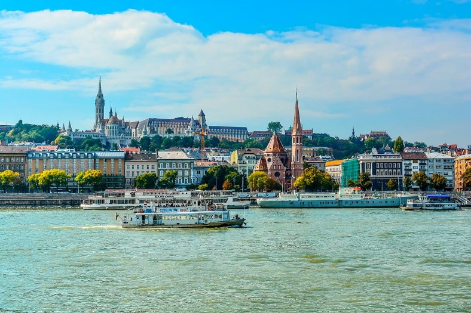
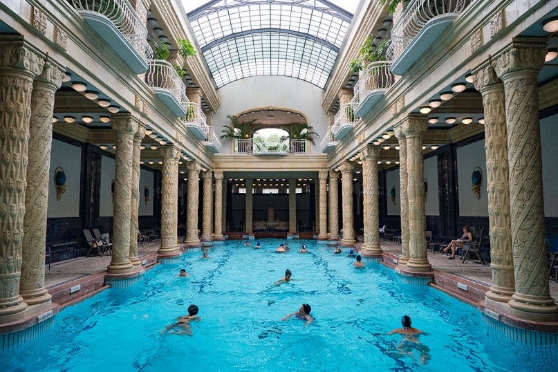
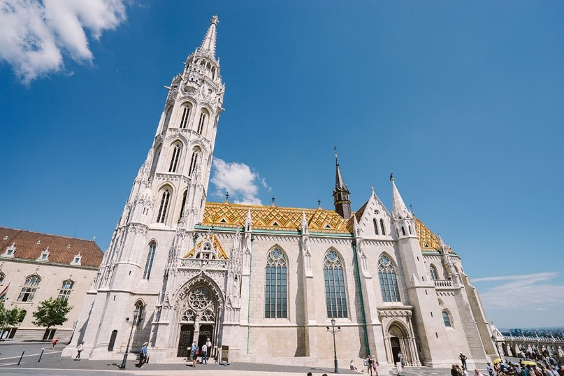
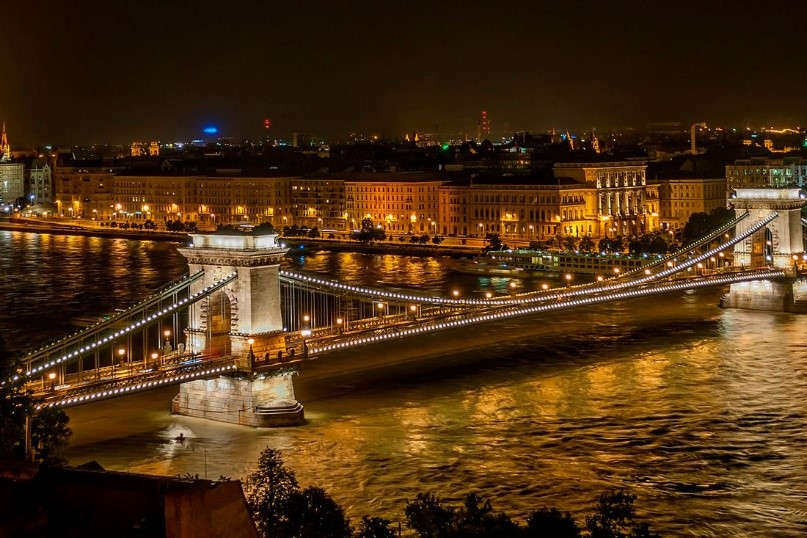
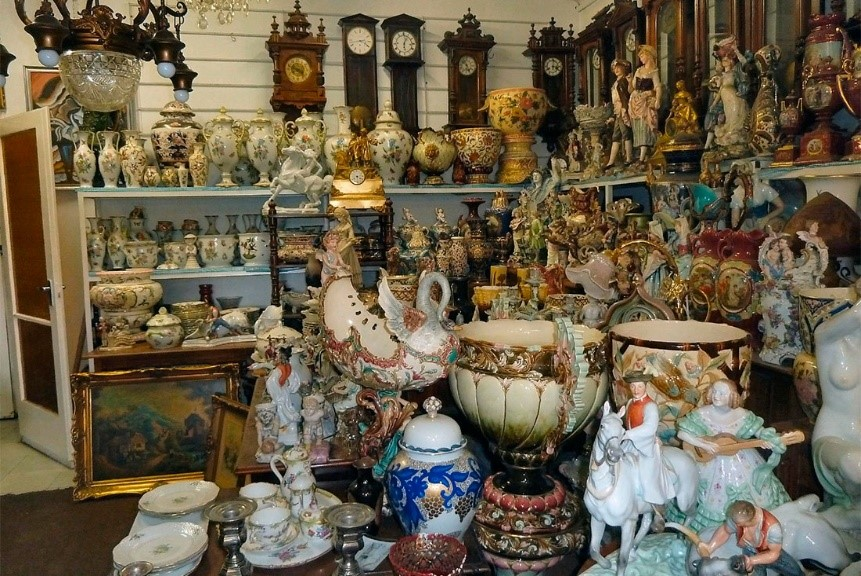
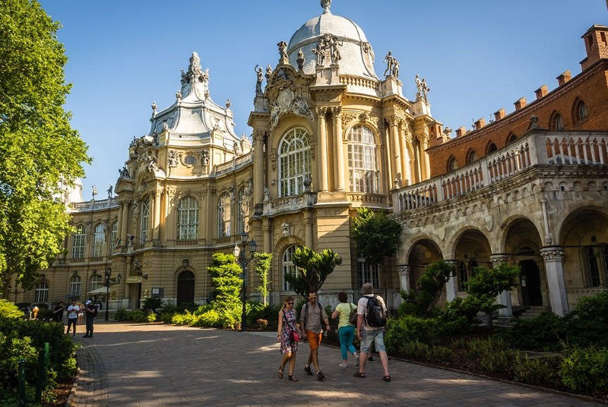

| Достопримечательности Будапешта | ваа|
|---|---|
| Будайская крепость и Замковый холм |  |
| Здание венгерского парламента | |
| Купальня Геллерт |  |
| Церковь Святого Матьяша (Церковь Девы Марии) |  |
| Цепной мост Сечени |  |
| Блошиный рынок Ecseri |  |
| Будапештский городской парк |  |